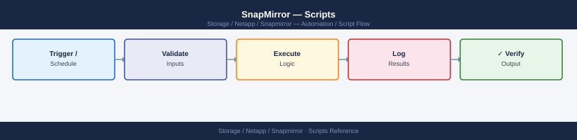

SnapMirror — Scripts¶

Before you begin¶
- Access: Storage admin credentials (cluster admin or equivalent)
- Timing: safe to run during business hours unless a step is marked ⚠ (causes interruption)
- Dependencies: no active upgrades or migrations on the same infrastructure
- Logging: capture command output — paste into the change record on completion
Lag Monitor (Bash)¶
SSH to the destination ONTAP cluster, parse SnapMirror lag times, colour-code each relationship by severity, and exit with a code reflecting the worst status. Thresholds are configurable via environment variables.
#!/bin/bash
# SnapMirror Lag Monitor with ANSI colour coding
# Usage: ONTAP_HOST=dst-cluster ONTAP_USER=admin ONTAP_PASS=secret ./sm_lag_monitor.sh
set -euo pipefail
CLUSTER="${ONTAP_HOST:?Set ONTAP_HOST}"
USER="${ONTAP_USER:?Set ONTAP_USER}"
PASS="${ONTAP_PASS:?Set ONTAP_PASS}"
WARN_MIN="${SM_WARN_MIN:-30}"
CRIT_MIN="${SM_CRIT_MIN:-60}"
# ANSI colours
RED='\033[0;31m'; YEL='\033[0;33m'; GRN='\033[0;32m'; NC='\033[0m'
worst=0 # 0=OK 1=WARN 2=CRIT
if ! command -v sshpass &>/dev/null; then
echo "ERROR: sshpass is required (brew install hudochenkov/sshpass/sshpass)" >&2
exit 3
fi
# ------------------------------------------------------------------
# Convert lag-time string to minutes
# Formats: "0:10:05" or "1day 02:15:00" or "2days 00:00:00"
# ------------------------------------------------------------------
lag_to_minutes() {
local raw="$1" days=0 hours=0 mins=0
if [[ "$raw" =~ ([0-9]+)[[:space:]]*day ]]; then
days="${BASH_REMATCH[1]}"
raw="${raw#*day}"
raw="${raw#s}"
raw="${raw# }"
fi
if [[ "$raw" =~ ^([0-9]+):([0-9]+):([0-9]+)$ ]]; then
hours="${BASH_REMATCH[1]}"
mins="${BASH_REMATCH[2]}"
fi
echo $(( days * 1440 + hours * 60 + mins ))
}
# ------------------------------------------------------------------
# Fetch SnapMirror data from destination cluster
# ------------------------------------------------------------------
RAW=$(sshpass -p "$PASS" ssh \
-o StrictHostKeyChecking=no \
-o BatchMode=no \
-o ConnectTimeout=15 \
"${USER}@${CLUSTER}" \
'snapmirror show -fields source-path,destination-path,lag-time,healthy,last-transfer-size,last-transfer-duration 2>/dev/null' 2>/dev/null)
echo
echo "=== SnapMirror Lag Report: ${CLUSTER} ==="
echo "Thresholds — WARN: ${WARN_MIN} min | CRIT: ${CRIT_MIN} min"
echo
printf "%-55s %10s %-8s %s\n" "RELATIONSHIP" "LAG (min)" "HEALTHY" "STATUS"
printf '%0.s-' {1..100}; echo
while IFS= read -r line; do
[[ "$line" =~ ^(source-path|[[:space:]]*$|[0-9]+ entries) ]] && continue
src=$(awk '{print $1}' <<< "$line")
dst=$(awk '{print $2}' <<< "$line")
lag=$(awk '{print $3}' <<< "$line")
healthy=$(awk '{print $4}' <<< "$line")
[[ -z "$src" || -z "$dst" ]] && continue
lag_min=$(lag_to_minutes "${lag:-0:00:00}")
rel="${src} -> ${dst}"
if [[ "$healthy" != "true" ]]; then
colour="$RED"; label="CRITICAL (unhealthy)"; (( worst < 2 )) && worst=2
elif (( lag_min >= CRIT_MIN )); then
colour="$RED"; label="CRITICAL (lag=${lag_min}m >= ${CRIT_MIN}m)"; (( worst < 2 )) && worst=2
elif (( lag_min >= WARN_MIN )); then
colour="$YEL"; label="WARNING (lag=${lag_min}m >= ${WARN_MIN}m)"; (( worst < 1 )) && worst=1
else
colour="$GRN"; label="OK"
fi
printf "%-55s %10d %-8s " "${rel:0:54}" "$lag_min" "$healthy"
echo -e "${colour}${label}${NC}"
done <<< "$RAW"
echo
case $worst in
0) echo -e "${GRN}All SnapMirror relationships are healthy and within lag thresholds.${NC}" ;;
1) echo -e "${YEL}WARNING: One or more relationships exceed the warning lag threshold.${NC}" ;;
2) echo -e "${RED}CRITICAL: One or more relationships are unhealthy or exceed the critical lag threshold.${NC}" ;;
esac
exit $worst
=== SnapMirror Lag Report: dst-cluster.example.com ===
Thresholds — WARN: 30 min | CRIT: 60 min
RELATIONSHIP LAG (min) HEALTHY STATUS
----------------------------------------------------------------------------------------------------
src-cluster.example.com:/vol/data01 -> dst-cluster.example.com:/vol/data01_mirror 12 true OK
src-cluster.example.com:/vol/data02 -> dst-cluster.example.com:/vol/data02_mirror 45 true WARNING (lag=45m >= 30m)
src-cluster.example.com:/vol/logs -> dst-cluster.example.com:/vol/logs_mirror 78 false CRITICAL (unhealthy)
src-cluster.example.com:/vol/archive -> dst-cluster.example.com:/vol/archive_mirror 8 true OK
CRITICAL: One or more relationships are unhealthy or exceed the critical lag threshold.
Common errors
ERROR: sshpass is required (brew install hudochenkov/sshpass/sshpass) — Install sshpass via your package manager (apt-get install sshpass on Linux, or brew install hudochenkov/sshpass/sshpass on macOS).
Permission denied (publickey,password). — Verify ONTAP_USER and ONTAP_PASS are correct and the user has cluster admin or snapmirror admin privileges.
ssh: Could not resolve hostname dst-cluster.example.com: Name or service not known — Ensure ONTAP_HOST is set to a resolvable FQDN or IP address of the destination cluster management interface.
How to run this script — step by step¶
Before you start — what you need
- Git for Windows installed (download from gitforwindows.org — it is free and includes Git Bash)
- sshpass available — this is tricky on Windows. The easiest approach is to use WSL (Windows Subsystem for Linux) instead of Git Bash, and run sudo apt install sshpass inside WSL
- Network access to your destination ONTAP cluster management IP
- An ONTAP admin username and password
Step 1 — Save the file
- Open Notepad (press the Windows key, type
Notepad, press Enter) - Copy the entire code block above
- Click File → Save As
- Change "Save as type" to All Files
- Name it
sm_lag_monitor.sh— save it to your Desktop
Step 2 — Fill in your details
| Variable | What to put here | Where to find it |
|---|---|---|
ONTAP_HOST |
Your destination cluster management IP | NetApp System Manager |
ONTAP_USER |
ONTAP admin username | Your storage admin |
ONTAP_PASS |
ONTAP admin password | Your storage admin |
SM_WARN_MIN |
Minutes of lag before WARNING (default: 30) | Your DR policy |
SM_CRIT_MIN |
Minutes of lag before CRITICAL (default: 60) | Your DR policy |
Step 3 — Open a terminal
Open WSL (Ubuntu from the Start menu), or open Git Bash.
Step 4 — Set variables and run
export ONTAP_HOST=192.168.1.100
export ONTAP_USER=admin
export ONTAP_PASS=yourpassword
cd /mnt/c/Users/YourName/Desktop
bash sm_lag_monitor.sh
SnapMirror Lag Monitor v2.1
Connected to ONTAP cluster: cluster1.example.com (192.168.1.100)
Authenticated as: admin
Relationship: vol_prod_01 → vol_prod_01_dr
Status: SnapMirrored
Last Transfer: 2024-01-15 14:32:18 UTC
Lag Time: 2 hours 14 minutes
Transfer Rate: 45.2 MB/s
Relationship: vol_data_02 → vol_data_02_dr
Status: SnapMirrored
Last Transfer: 2024-01-15 14:28:05 UTC
Lag Time: 2 hours 18 minutes
Transfer Rate: 38.7 MB/s
Relationship: vol_logs_03 → vol_logs_03_dr
Status: Transferring
Last Transfer: 2024-01-15 14:45:22 UTC
Lag Time: 18 minutes
Transfer Rate: 62.1 MB/s
Monitor completed successfully. Next check in 300 seconds.
Common errors
curl: (7) Failed to connect to 192.168.1.100 port 443: Connection refused — Verify the ONTAP management IP is correct and the cluster API is accessible on port 443.
Error: Invalid credentials for user 'admin' — Confirm ONTAP_USER and ONTAP_PASS environment variables match the cluster admin account credentials.
bash: sm_lag_monitor.sh: No such file or directory — Ensure the script exists in the current directory (/mnt/c/Users/YourName/Desktop) or provide the full path to the script.
What you should see
A table listing every SnapMirror relationship with source path, destination path, lag in minutes, healthy flag, and a colour-coded status: green OK, yellow WARNING, red CRITICAL. A summary line at the bottom shows the overall worst state.
Planned DR Failover (Bash)¶
Perform a controlled SnapMirror failover at the DR site: quiesce all relationships, wait for in-flight transfers to stop, break relationships to make destination volumes read-write, and print host-side mount instructions. Requires confirmation at each destructive step.
#!/bin/bash
# SnapMirror Planned DR Failover Script
# Usage: DEST_CLUSTER=dr-cluster DEST_SVM=svm_dr VOLUMES="vol1 vol2 vol3" \
# ONTAP_USER=admin ONTAP_PASS=secret ./sm_dr_failover.sh
set -euo pipefail
DEST_CLUSTER="${DEST_CLUSTER:?Set DEST_CLUSTER}"
DEST_SVM="${DEST_SVM:?Set DEST_SVM}"
VOLUMES="${VOLUMES:?Set VOLUMES (space-separated list)}"
USER="${ONTAP_USER:?Set ONTAP_USER}"
PASS="${ONTAP_PASS:?Set ONTAP_PASS}"
WAIT_SECS="${SM_WAIT_SECS:-30}" # seconds to wait for quiesce to complete
if ! command -v sshpass &>/dev/null; then
echo "ERROR: sshpass is required." >&2; exit 3
fi
LOG_FILE="/var/log/dr_failover_$(date +%Y%m%d_%H%M%S).log"
exec > >(tee -a "$LOG_FILE") 2>&1
ts() { echo "[$(date '+%Y-%m-%d %H:%M:%S')]"; }
log() { echo "$(ts) $*"; }
confirm() {
read -rp "$1 [yes/NO]: " ans
[[ "${ans,,}" == "yes" ]] || { log "Aborted by user."; exit 1; }
}
log "=== SnapMirror Planned DR Failover ==="
log "Destination cluster : $DEST_CLUSTER"
log "Destination SVM : $DEST_SVM"
log "Volumes : $VOLUMES"
log "Log file : $LOG_FILE"
confirm "Proceed with DR failover? This will make destination volumes read-write."
ssh_cmd() {
sshpass -p "$PASS" ssh -o StrictHostKeyChecking=no -o BatchMode=no \
"${USER}@${DEST_CLUSTER}" "$@" 2>/dev/null
}
log "Step 1: Quiescing SnapMirror relationships..."
for vol in $VOLUMES; do
dst_path="${DEST_SVM}:${vol}"
log " Quiescing $dst_path"
ssh_cmd "snapmirror quiesce -destination-path ${dst_path}" || \
log " WARNING: quiesce command returned non-zero for $dst_path"
done
log "Step 2: Waiting ${WAIT_SECS}s for in-flight transfers to complete..."
sleep "$WAIT_SECS"
confirm "All transfers appear stopped. Proceed to break relationships?"
log "Step 3: Breaking SnapMirror relationships..."
for vol in $VOLUMES; do
dst_path="${DEST_SVM}:${vol}"
log " Breaking $dst_path"
ssh_cmd "snapmirror break -destination-path ${dst_path} -force" || \
{ log "ERROR: Failed to break $dst_path — manual intervention required"; exit 2; }
log " $dst_path is now read-write"
done
log "Failover complete. Log saved to: $LOG_FILE"
[2024-01-15 14:32:18] === SnapMirror Planned DR Failover ===
[2024-01-15 14:32:18] Destination cluster : dr-cluster
[2024-01-15 14:32:18] Destination SVM : svm_dr
[2024-01-15 14:32:18] Volumes : vol1 vol2 vol3
[2024-01-15 14:32:18] Log file : /var/log/dr_failover_20240115_143218.log
Proceed with DR failover? This will make destination volumes read-write. [yes/NO]: yes
[2024-01-15 14:32:20] Step 1: Quiescing SnapMirror relationships...
[2024-01-15 14:32:20] Quiescing svm_dr:vol1
[2024-01-15 14:32:21] Quiescing svm_dr:vol2
[2024-01-15 14:32:22] Quiescing svm_dr:vol3
[2024-01-15 14:32:23] Step 2: Waiting 30s for in-flight transfers to complete...
[2024-01-15 14:32:53] All transfers appear stopped. Proceed to break relationships? [yes/NO]: yes
[2024-01-15 14:32:55] Step 3: Breaking SnapMirror relationships...
[2024-01-15 14:32:55] Breaking svm_dr:vol1
[2024-01-15 14:32:56] svm_dr:vol1 is now read-write
[2024-01-15 14:32:57] Breaking svm_dr:vol2
[2024-01-15 14:32:58] svm_dr:vol2 is now read-write
[2024-01-15 14:32:59] Breaking svm_dr:vol3
[2024-01-15 14:33:00] svm_dr:vol3 is now read-write
[2024-01-15 14:33:01] Failover complete. Log saved to: /var/log/dr_failover_20240115_143218.log
Common errors
ERROR: sshpass is required. — Install sshpass with apt-get install sshpass (Ubuntu/Debian) or yum install sshpass (RHEL/CentOS).
Permission denied (publickey,password). — Verify ONTAP_USER and ONTAP_PASS are correct and the user has SSH access to the destination cluster.
ERROR: Failed to break <destination-path> — manual intervention required — Check cluster connectivity and ensure the SnapMirror relationship exists; manually run snapmirror break -destination-path <path> -force on the destination cluster.
Relationship Health Report (Perl)¶
SSH to both source and destination clusters, collect SnapMirror relationship data, cross-reference to verify all expected relationships exist, and report any missing or broken-off relationships.
#!/usr/bin/perl
use strict;
use warnings;
use Net::SSH2;
my $SRC_CLUSTER = $ENV{SM_SRC_HOST} // die "Set SM_SRC_HOST\n";
my $DST_CLUSTER = $ENV{SM_DST_HOST} // die "Set SM_DST_HOST\n";
my $USER = $ENV{ONTAP_USER} // die "Set ONTAP_USER\n";
my $PASS = $ENV{ONTAP_PASS} // die "Set ONTAP_PASS\n";
sub ssh_connect {
my ($host) = @_;
my $s = Net::SSH2->new();
$s->connect($host, 22) or die "Cannot connect to $host: $!\n";
$s->auth_password($USER, $PASS) or die "Auth failed for $host\n";
return $s;
}
sub ssh_run {
my ($ssh2, $cmd) = @_;
my $ch = $ssh2->channel() or die "Channel error\n";
$ch->exec($cmd);
my $out = '';
while (!$ch->eof) { $ch->read(my $buf, 4096); $out .= $buf // '' }
$ch->close;
return $out;
}
print "Connecting to source cluster: $SRC_CLUSTER\n";
my $src_ssh = ssh_connect($SRC_CLUSTER);
my $src_raw = ssh_run($src_ssh, 'snapmirror list-destinations -fields source-path,destination-path 2>/dev/null');
$src_ssh->disconnect;
print "Connecting to destination cluster: $DST_CLUSTER\n";
my $dst_ssh = ssh_connect($DST_CLUSTER);
my $dst_raw = ssh_run($dst_ssh, 'snapmirror show -fields source-path,destination-path,lag-time,healthy,state 2>/dev/null');
$dst_ssh->disconnect;
printf "%-50s %-10s %-15s %s\n", "DESTINATION PATH", "HEALTHY", "STATE", "LAG";
Ansible SnapMirror Resync Playbook¶
Resync SnapMirror relationships after a DR test — verify destination volumes exist, resync each relationship, wait for healthy status with retries, and print a completion summary.
---
# SnapMirror Resync Playbook
# Use after a DR test to re-establish SnapMirror protection.
- name: SnapMirror Resync After DR Test
hosts: localhost
gather_facts: false
vars:
ontap_validate_certs: false
resync_retries: 12
resync_delay: 30
tasks:
- name: Resync each SnapMirror relationship
netapp.ontap.na_ontap_snapmirror:
state: present
relationship_state: active
initialize: false
destination_endpoint:
cluster: "{{ dest_cluster }}"
path: "{{ dest_svm }}:{{ item }}"
hostname: "{{ dest_cluster }}"
username: "{{ ontap_username }}"
password: "{{ ontap_password }}"
validate_certs: "{{ ontap_validate_certs }}"
use_rest: always
loop: "{{ volumes }}"
- name: Assert all relationships are healthy
ansible.builtin.assert:
that: "item.healthy == true"
fail_msg: "Relationship for {{ item.volume }} is still unhealthy after resync."
loop: "{{ final_status }}"
Windows: SnapMirror Relationship Status via REST API (PowerShell)¶
Use the ONTAP REST API on the destination cluster to retrieve all SnapMirror relationships, filter for any that are not in a healthy snapmirrored state, and print a formatted status report.
# sm_status_rest.ps1 — SnapMirror Relationship Status via REST API (Windows PowerShell)
$DestCluster = "192.168.2.100"
$OntapUser = "admin"
$OntapPass = "yourpassword"
$AuthBytes = [System.Text.Encoding]::ASCII.GetBytes("${OntapUser}:${OntapPass}")
$AuthBase64 = [Convert]::ToBase64String($AuthBytes)
$Headers = @{ Authorization = "Basic $AuthBase64" }
$BaseUrl = "https://$DestCluster/api"
$resp = Invoke-RestMethod `
-Uri "$BaseUrl/snapmirror/relationships?fields=source,destination,state,healthy,lag_time" `
-Headers $Headers `
-Method GET
foreach ($rel in $resp.records | Sort-Object { $_.healthy }) {
$source = "$($rel.source.svm.name):$($rel.source.path)"
$dest = "$($rel.destination.svm.name):$($rel.destination.path)"
if ($rel.healthy -eq $true -and $rel.state -eq "snapmirrored") {
Write-Host (" [OK] {0} -> {1}" -f $source, $dest) -ForegroundColor Green
} else {
Write-Host (" [ISSUE] {0} -> {1} state={2}" -f $source, $dest, $rel.state) -ForegroundColor Red
}
}
Verify¶
- Confirm the operation completed without errors in the log or management UI
- Verify the expected state change is visible (service running, object created, config applied)
- Document the outcome in the change record